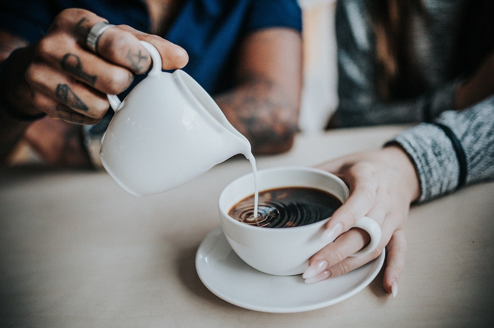
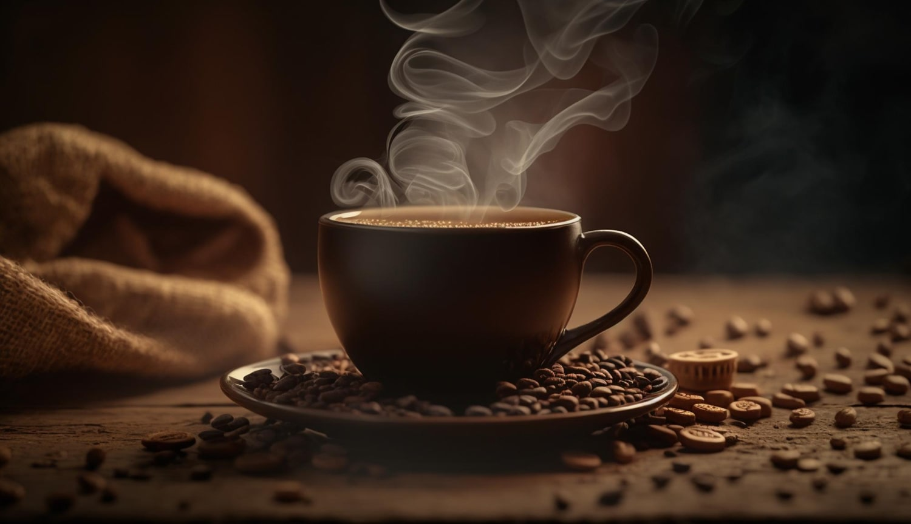

مصرف قهوه به همراه شیر برای کاهش التهاب
ترکیب شیر قهوه برای مقابله با التهاب
پلی فنول ها گروهی از مولکول های موجود در گیاهان و غذاهای مشتق شده از گیاه هستند که به دلیل فعالیت آنتی اکسیدانی خود دارای طیف وسیعی از مزایای سلامتی شناخته شده هستند. شناخته شده است که آنها با آمینو اسیدها , بلوک های ساختمانی پروتئین - که در غذاها نیز وجود دارند، متصل می شوند و می توانند اثرات آنتی اکسیدانی آنها را افزایش دهند.مطالعات قبلی به تأثیر اتصال پلی فنل با پروتئین های موجود در گوشت پرداخته اند. اکنون تیمی از محققان نشان داده اند که وقتی پلی فنول های موجود در قهوه با اسید آمینه موجود در شیر پیوند می خورند، اثرات آنتی اکسیدانی و ضد التهابی در سلول های موش در شرایط آزمایشگاهی افزایش می یابد. یکی از دلایلی که چرا غذاهای گیاهی ممکن است برخی از فواید سلامتی مانند محافظت در برابر سرطان، بیماری عروق کرونر قلب و التهاب را ارائه دهند، وجود پلی فنول ها است. با این حال، پلیفنولها میتوانند با ماکروفاژها تعامل داشته باشند و فعالیت آنها را تغییر دهند، که تصور میشود در پس خواص سلامتی آنها قرار دارد. یک گروه از محققان دانشگاه کپنهاگ، دانمارک، قبلاً به تأثیر اتصال پلی فنل به پروتئین های موجود در محصولات گوشتی، شیر و آبجو پرداختند. اخیراً آنها تصمیم گرفتند در مورد قهوه تحقیق کنند. آخرین تحقیقات آنها به دنبال توضیح این بود که چگونه اتصال این پلی فنل خاص با اسید آمینه سیستئین بر اثر مهاری آن بر التهاب در سلول ها تأثیر می گذارد. آنها نتایج خود را در مجله شیمی کشاورزی و مواد غذایی منتشر کردند. نویسنده اصلی پروفسور ماریان نیسن لوند به ما توضیح داد که چرا آنها تصمیم گرفتند این پیوند را بررسی کنند. او گفت: ما پیش از این دریافتیم که پلیفنولها با پروتئینهای موجود در انواع مختلف غذاها، از جمله محصولات گوشتی، عصاره گیاهی اضافه شده مانند ادویهها، شیر، عصاره چای سبز اضافه شده و آبجو واکنش نشان میدهند. دلیل شروع بررسی پلی فنل های قهوه به این دلیل است که این پلی فنول ها ساختار ساده تری نسبت به نمونه هایی که در چای سبز یافت می شوند، دارند، بنابراین زمانی که ما نیاز به انجام آنالیزهای شیمیایی خود داریم کار با آنها کمی آسان تر است. ثابت کند که آنها واقعاً در غذاها وجود دارند.
نحوه تعامل پلی فنل ها با شیر
پلی فنول ها فراوان ترین منبع آنتی اکسیدان ها در رژیم غذایی ما هستند و تصور می شود استرس اکسیداتیو در بدن را که به طور طبیعی اتفاق می افتد، کاهش می دهند. با این حال، آنها همچنین به مقابله با روند پیری کمک می کنند و ضد التهاب هستند. تصور میشود که این اثر زمانی رخ میدهد که پلی فنولها استرس اکسیداتیو را کاهش میدهند، که میتواند به کاهش التهاب و در نتیجه پیری کمک کند. قهوه منبع پلی فنول ها از جمله اسید کافئیک است که در آرد آفتابگردان نیز یافت می شود. شناخته شده است که اکسیداسیون لیپوپروتئین را مهار می کند، زیرا مانند کلسترول عمل می کند زیرا چسبنده است و می تواند رگ های خونی را باریک و مسدود کند. تصور می شود که مهار اکسیداسیون لیپوپروتئین این اثر را مهار می کند، بنابراین خطر ابتلا به بیماری های قلبی عروقی را کاهش می دهد. دکتر عادل مقبول از کالج پزشکی علامه اقبال در لاهور پاکستان که در این مطالعه شرکت نداشت، گفت: تحقیقات قبلی نشان داده است که پلی فنول ها می توانند به کاهش پاسخ ایمنی در افرادی که به شیر حساس هستند کمک کند. او به مدیکال نیوز تودی گفت: شواهدی وجود دارد که نشان می دهد ترکیب پلی فنول ها، ترکیبات طبیعی موجود در برخی از غذاهای گیاهی خاص، با محصولات لبنی ممکن است به کاهش پاسخ ایمنی در افراد مبتلا به عدم تحمل لاکتوز یا کازئین کمک کند. او افزود: مکانیسمهای دقیق پشت این تعامل هنوز به طور کامل شناخته نشده است، اما اعتقاد بر این است که پلی فنولها ممکن است با کاهش التهاب به کاهش پاسخ ایمنی کمک کنند.
حساسیت یا حساسیت به لبنیات
دو دلیل وجود دارد که چرا ممکن است فردی نسبت به محصولات شیر گاو حساسیت یا آلرژی داشته باشد. افراد ممکن است به دلیل کمبود لاکتاز، آنزیمی که قند را هضم می کند، به لاکتوز قندی که در شیر وجود دارد عدم تحمل داشته باشند. علت این امر می تواند ژنتیکی باشد. در همین حال، افرادی که به شیر گاو حساسیت دارند، در مواجهه با کازئین، پروتئین موجود در شیر، واکنش ایمنی ایجاد می کنند. یکی از اسیدهای آمینه موجود در شیر، سیستئین است و تاکنون تحقیقات کمی در مورد تأثیر اتصال پلی فنول های موجود در قهوه با این اسید آمینه انجام شده است.